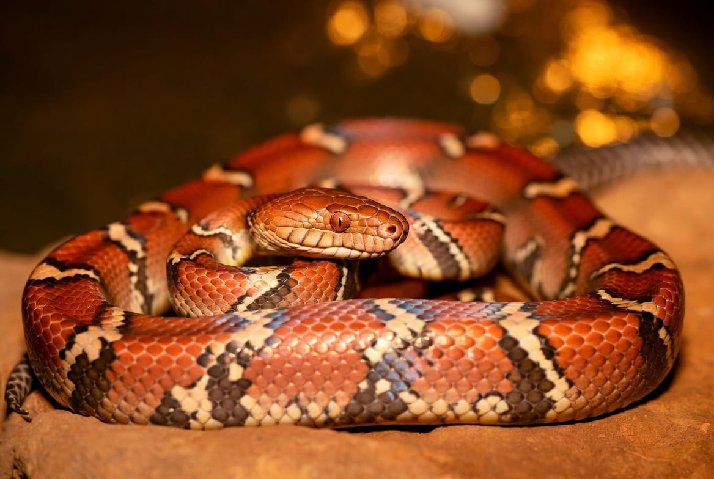

Corn Snake · Pantherophis guttatus
A complete, fact-checked printable manual: the enclosure size a preference test actually supports, the one piece of equipment with no exceptions, feeding by weight, health triage, and the routines that carry a snake past 20 years.

Contents
Every page is written to be used, not just read once.
Getting Started
Section 01 · Quick Profile
Section 02 · Full Care Guide
Section 03 · Health & Common Issues
Section 04 · Quick Reference
Section 05 · Owner Tools
Reference
Start here
Three ways to get value from it, depending on where you are right now.
Read pages 4 through 9 in order before buying anything. Corn snakes are a genuinely forgiving species to set up correctly, with one non-negotiable exception on page 5. The other decision worth getting right the first time is enclosure size, because for this species it is also the enrichment, and page 9 has the preference test behind that. Then use the Budget & Shopping List on page 16.
Jump to the Setup Checklist and Climate Targets on page 14 to audit what you have, and page 10 if anything seems off. If your snake won't eat, start on page 13 instead: refusal in this species has seven common explanations and only one of them is illness. And if you have a heat source without a thermostat, fix that today.
Why this package exists
Corn snakes are the best-studied snake in the hobby, and the research contradicts one of the most repeated lines in snake keeping. Page 9 gives you that in full. Where sources genuinely disagree, on humidity and on hatchling feeding frequency in particular, this package says so and explains which way to weight it, rather than picking a number and pretending it is settled.
Not a substitute for
A reptile-experienced veterinarian. Get a new corn snake checked within the first few weeks, and plan an annual wellness exam with a fecal test after that. Find the vet before you need one, and write the number on page 15.
Section 01
Everything at a glance before you read the detail.
| Scientific name | Pantherophis guttatus, a North American rat snake |
| Adult size | 3.5 to 5 ft (107 to 152 cm), slender-bodied |
| Captive lifespan | 10 to 15 years typical, with documented individuals to 22 |
| Native range | Eastern and central United States; pine forest, woodland, and farmland |
| Diet type | Carnivore; whole frozen-thawed rodents, no supplementation needed |
| Enclosure minimum (adult) | 40 gal breeder (36×18×18 in); 4×2×2 ft preferred |
| Escape risk | High. Notorious escape artists, so the lid has to latch |
| Handling difficulty | Beginner; juveniles are fast and defensive, adults are famously docile |
| Conservation status | Least Concern (IUCN) |
$250 to $600 for a solid basic setup, reaching about $1,150 for a PVC enclosure with UVB and premium fixtures. A normal-morph snake is $25 to $70.
$200 to $500 once the setup is finished, covering frozen rodents, substrate, the electricity to run heat continuously, and a wellness exam.
Low running cost, long commitment
An adult eats every 14 to 21 days, which keeps the food budget among the lowest of any pet its size. Spread the setup across a 15 to 20 year lifespan and the per-year cost is genuinely small, but it is still a two-decade animal.
Section 02 · Full Care Guide
Corn snakes are terrestrial, so floor space matters more than height, though they will use a stable branch when one is offered. The adult minimum is a 40-gallon breeder at 36×18×18 inches, with 4×2×2 ft (48×24×24 in) preferred for a fully grown adult. Front-opening PVC is generally better than glass: it holds humidity more effectively and tends to be more escape-proof, which matters here more than with most species. House corn snakes singly.
The one rule with zero exceptions
Every heat source runs through a thermostat. An unregulated heat mat can climb to around 120°F, which is hot enough to cause a serious burn on an animal that will lie directly on it. Place the probe where your snake actually spends time, inside the warm hide or on the substrate surface, not taped to the mat itself, which gives a misleading reading. Never use a hot rock.
Section 02 · Full Care Guide
| Zone | Target |
|---|---|
| Warm side surface | 85 to 88°F (some sources accept 80 to 85°F) |
| Cool side | 72 to 78°F |
| Overall ambient | 75 to 82°F |
| Nighttime | 65 to 75°F |
| Humidity, higher-baseline sources | 65 to 75% |
| Humidity, conventional sources | 40 to 60%, raised to 60 to 70% during a shed |
Measure humidity with a digital hygrometer at substrate level, not up near the lid, where readings run drier than what the snake actually experiences. The one number worth holding firmly: a corn snake needs roughly 82°F or more on the warm side to digest a meal safely, so a warm side running cool is a feeding problem before it is anything else.
This is a genuine split. Some specialist husbandry guides recommend a higher baseline of 65 to 75%, arguing that wild corn snake habitat runs more humid than conventional reptile-keeping wisdom assumes. Many other sources and vets cite 40 to 60% as sufficient, raised to 60 to 70% specifically during shedding. In practice either range works, and plenty of corn snakes have thrived for decades under the drier guidance.
What settles it in practice is consistency plus a dedicated humid hide packed with damp sphagnum moss, so the snake can access higher humidity during a shed regardless of what the rest of the enclosure reads. That single furnishing removes most of the reason to argue about the baseline at all.
Not required, and corn snakes have been kept successfully without it for decades, but it is increasingly viewed as beneficial for long-term health. If you add it, use a low-output T5 spanning about half the enclosure on the warm side, targeting a UVI around 2.0 to 3.0.
A 12 hour light, 12 hour dark cycle either way, using a basic LED on a timer if you skip UVB. Avoid bright or colored bulbs at night; use a ceramic heat emitter if you genuinely need supplemental night heat.
| You notice | Likely means |
|---|---|
| Shed coming off in pieces, or retained eye caps | Humidity too low through the shed cycle |
| A meal brought back up a day or two later | Warm side too cool to digest, or handled too soon |
| Substrate staying damp, condensation on the walls | Too wet or too little ventilation, scale rot risk |
| Sitting on the cool side and refusing to move | Warm side too hot; check the probe placement |
Section 02 · Full Care Guide
Aspen shavings are the classic choice: they dry quickly and suit a lower-humidity setup well. Coconut fiber, cypress mulch, or a soil-based mix work better if you run toward the higher end of the humidity range. Whatever you choose, keep it 3 to 4 inches deep so the snake can burrow, which it will. Spot-clean daily and do a full substrate change every 3 to 4 months.
Never
Pine or cedar, both of which contain oils toxic to reptiles. Also skip gravel and loose bark chips, which carry an impaction risk, and hot rocks, which are a well-documented burn hazard and add nothing a properly regulated heat source does not already do better.
Give a new corn snake time to acclimate and eat successfully three or four times, roughly one to two weeks at minimum, before handling. Keep early sessions to 5 or 10 minutes, no more than a couple of times a week, and build up gradually. For hatchlings, start as short as 1 to 2 minutes. Juveniles can be fast, wiggly, and genuinely defensive before they settle into the calm temperament adults are known for, so patience early pays off later.
Make sure the snake is actually awake first, since a gentle tap with a paper-towel roll or a hook stops it mistaking your hand for food. Approach from the side rather than straight down from above, support as much of the body as you can with both hands, and let the snake move through them rather than trying to hold it still. Never grab or restrain the head or tail.
The two timing rules
Wait 48 to 72 hours after a meal before handling, since handling too soon is one of the most common causes of regurgitation. And skip handling during a shed: cloudy or blue eyes mean the snake is functionally blind and more likely to bite out of startlement rather than temperament.
Rapid tongue-flicking, tight coiling, musking, striking, tail rattling or vibrating, and fast erratic movement. Stay calm if you see them: it is usually better to let a brief tantrum settle before returning the snake to its enclosure than to put it back mid-thrash, which reinforces the behavior. Bites are rare and minor, typically a startled reaction rather than aggression, and treated with soap and water. Corn snakes carry Salmonella like virtually all reptiles, so wash hands before and after every session and supervise handling for children.
Section 02 · Full Care Guide
The schedule below is keyed to weight as well as age, which is the more useful pairing. Let body condition and monthly weigh-ins guide you more than the calendar does.
| Stage | Weight | Frequency |
|---|---|---|
| Hatchling (0 to 3 months) | Under about 30 g | Every 5 to 7 days, starting on pinky mice |
| Young juvenile (3 to 9 months) | 30 to 100 g | Every 7 days |
| Juvenile (9 to 18 months) | 100 to 300 g | Every 7 to 10 days |
| Sub-adult (18 to 36 months) | 300 to 600 g | Every 10 to 14 days |
| Adult (3+ years) | 600 g+ | Every 14 to 21 days |
A vet-content source gives a notably more frequent version across the board, every other day for babies and weekly for juveniles. That is a real disagreement, roughly a 2 to 3× difference for hatchlings. The specialist schedule above is more consistent across independent sources and is worth weighting more heavily, but it is not silently settled.
Roughly 1 to 1.5 times the width of the snake at its widest point, or about 10 to 15% of body weight per meal. Two smaller items can substitute for one larger one if you are between sizes. Don't feed on too tight a schedule once the snake is adult: one source warns it can produce obesity within 12 to 18 months.
Thaw in the refrigerator overnight, then warm in warm, not boiling, water to roughly 98 to 102°F to mimic living prey. Never microwave, and never re-freeze prey that has been thawed and refused.
Never feed
Live prey, which can bite, scratch, or claw a snake that isn't ready to strike, and cause a serious infection. Wild-caught prey of any kind. Meat scraps or cooked food. Prey that has been thawed, refused, and re-frozen. And insects, which are not a natural food for this species and which corn snakes reportedly have an aversion to anyway.
Supplementation is mostly unnecessary here
A whole-prey diet, bones and organs included, is nutritionally complete, unlike an insect-based reptile diet. Where dusting is used at all it is for hatchlings on pinky mice, a light calcium and multivitamin dusting every 3 to 4 feedings, tapering off on larger prey. Over-supplementing calcium can itself cause mineral imbalance or kidney stress.
Section 02 · Full Care Guide
The enclosure size question has a preference test behind it
Hoehfurtner and colleagues housed corn snakes in enclosures either two thirds of their body length or longer than their body length. When they had room to stretch out completely, they did, and they showed a clear preference for the larger enclosure. The authors' recommendation is that captive snakes be kept in enclosures that allow them to stretch. Two further 2021 papers from the same group looked at added complexity and at scent discrimination, where enrichment changed how well snakes told familiar from unfamiliar human odor.
For most animals size and enrichment are separate line items. For corn snakes the research collapses them, because stretching, exploring, and moving between microclimates all require length first. A 4×2×2 ft comfortably exceeds body length for an adult.
They are semi-arboreal and will use height when it is stable. A firmly braced branch or a stack of cork gives a second usable level. Height does not substitute for length, but on top of adequate floor space it gets used.
More space only helps if the snake will cross it. A corn snake in a large bare enclosure uses two hides and nothing else. Cork tubes and flats, leaf litter, and plants dense enough to interrupt sightlines let it move end to end without ever being fully exposed.
A shed from another enclosure, a scent-marked object, or prey dragged across the substrate invites investigation, and the odor study suggests the channel is worth using. Rearrangement comes last: rebuilding weekly removes the familiarity the snake navigates by.
Section 03 · Health & Common Issues
What to watch for, and what to actually tell the vet.
Contact a reptile vet promptly if you see
Open-mouth breathing, wheezing, or an audible clicking sound · mucus or discharge around the nose or mouth · belly scales that are discolored, soft, mushy, or blistered · visible mites · swollen or reddened gums, or discharge in the mouth · repeated regurgitation · star-gazing or corkscrewing movements · weight loss with diarrhea despite normal eating
Corn snakes are one of the hardier pet snakes, and nearly every health problem they develop traces back to temperature, humidity, or substrate rather than to bad luck. Get those three right and most of Section 03 stays theoretical. That also means a vet will ask about your setup first, so having the numbers ready shortens the visit and often changes the diagnosis.
| Normal | Concerning |
|---|---|
| Refusing food for 5 to 7 days before a shed, with cloudy eyes | Refusal alongside weight loss, lethargy, or wheezing |
| Burrowing under the substrate and staying out of sight for days | Sitting on the cool side, unmoving, refusing to use the warm end |
| Tail vibrating against substrate when startled | Persistent open-mouth breathing or clicking |
| A soak in the water bowl, most often around a shed | Soaking constantly, or rubbing persistently against surfaces |
| Reduced appetite in a male through breeding season | A hatchling refusing food for over about a week |
Section 03 · Health & Common Issues
Cause: usually bacterial, and almost always secondary to an enclosure that is too cold or too damp. It is the most common issue in pet corn snakes. Signs: open-mouth breathing, wheezing or an audible clicking sound, mucus or discharge around the nose or mouth, and lethargy. Diagnosis: physical exam and listening to the lungs, with the vet asking directly about your temperature setup. Response: a reptile vet and prescription antibiotics, not a wait-and-see approach, and correcting the temperature and humidity in parallel or it recurs. Recovery: good when caught early; left untreated it can become serious quickly.
Learn this one by sound
A clicking or wheezing corn snake is the single clearest audible signal in this package. If you hear it, raise the warm side to target, check humidity at substrate level, and call a reptile vet. Do not wait a week to see whether it settles.
Cause: a bacterial infection of the belly scales, usually from damp or dirty substrate, or a water bowl that has been overflowing or sitting unchanged too long. Signs: belly scales discolored brown, yellow, or black, skin that looks soft, mushy, or blistered, and a foul smell. Response: fix the underlying husbandry immediately, move the snake to clean dry substrate, and see a vet, especially if it is spreading. Recovery: affected scales generally resolve over the next one to two shed cycles once the environment is corrected.
The common thread
These are the same problem approached from two directions. Respiratory infection follows cold and damp; scale rot follows substrate that never dries out. Both are prevented by a warm side that actually holds its target, real ventilation, and a water bowl that gets changed rather than topped up. The humid hide gives the snake the moisture it needs without turning the whole enclosure into the condition that causes both.
Section 03 · Health & Common Issues
Cause: almost always introduced, on a new snake, on used decor, or from a shop or expo. Signs: tiny black or red specks moving on the scales or floating in the water bowl, often with the snake soaking excessively or rubbing against surfaces. Why they matter: irritation, and in significant infestations anemia and real stress on the animal. Response: treating the snake alone is not enough. The whole enclosure has to be treated at the same time or the infestation simply comes back, which usually means stripping substrate completely and repeating on the schedule your vet sets.
Cause: an infection of the mouth tissue, typically secondary to stress, injury, or ongoing poor husbandry rather than arriving alone. Signs: swollen or reddened gums and visible discharge, sometimes with reluctance to feed. Response: veterinary treatment. This does not resolve with home care, and because it usually rides on top of another problem, the visit should come with an honest account of your setup.
Cause: almost always a humidity problem. Signs: patches of skin that did not come off cleanly, and retained eye caps. Prevention: a humid hide with damp sphagnum moss available during shed cycles prevents most of it, along with a rough surface such as cork for the snake to start the shed against. Never peel skin off by force.
Check the eye caps every time
Retained eye caps are one of the easiest shed problems to miss, because a corn snake's vision and behavior often look completely normal with one still in place. That is exactly why every shed is worth a quick visual check rather than just confirming the old skin came off in one piece. A retained cap needs a vet, not a home attempt.
Quarantine is the actual fix for mites
Keep a new snake fully separate, on paper towel in a simple setup, with separate tools and hand-washing between enclosures, for long enough to be confident it is clean before it goes anywhere near an established animal.
Section 03 · Health & Common Issues
Bringing a meal back up hours to days after eating, usually from handling too soon after a meal or from a warm side too cool to digest properly. It is hard on the digestive system and repeated episodes cause real damage. After one, leave the snake alone for 10 to 14 days, then offer a smaller than usual prey item. Repeated regurgitation is a vet visit rather than a feeding adjustment. Check the warm side reading first: 82°F or more is what safe digestion needs.
The sources disagree on when to worry, and both have a point
A healthy adult can physically survive roughly 2 to 3 months without food, and reptile-specialist sources describe refusal as unremarkable until it passes about 1 to 2 months outside a planned brumation. A more conservative vet-content source recommends a call after just a couple of missed feedings. Those are keeper field experience and standard vet caution talking past each other. Monthly weigh-ins are a better guide than counting days: give benefit of the doubt to a snake that is active and holding weight, not to one that is lethargic or visibly thinning. A hatchling going over about a week is already worth taking seriously.
A seasonal slowdown, done deliberately by gradually dropping enclosure temperatures over 1 to 2 weeks, followed by 2 to 4 months without food. A mandatory 10 to 14 day fast at normal temperature has to come first: undigested food in a cooling gut can rot and cause a fatal infection. This is not something to do casually or by accident, and if your snake goes quiet in winter without you having planned it, confirm with a vet that you are looking at brumation rather than illness.
Section 04 · Quick Reference
| Target | Range |
|---|---|
| Warm side surface | 85 to 88°F (80 to 85°F accepted by some sources) |
| Minimum for safe digestion | About 82°F on the warm side |
| Cool side | 72 to 78°F |
| Overall ambient | 75 to 82°F |
| Nighttime | 65 to 75°F |
| Humidity | 40 to 60% or 65 to 75% by source; 60 to 70% through a shed |
| UVI, if you add UVB | 2.0 to 3.0 |
| Photoperiod | 12 hours light / 12 hours dark |
Print & post near the enclosure
Call a reptile vet if you see
Open-mouth breathing, wheezing, or clicking · mucus at the nose or mouth · belly scales discolored, soft, or blistered · visible mites · swollen gums or mouth discharge · repeated regurgitation · star-gazing or corkscrewing · weight loss with diarrhea · a burn over the heat source
| Reading | Target |
|---|---|
| Warm side surface | 85 to 88°F |
| Minimum to digest a meal | About 82°F |
| Cool side | 72 to 78°F |
| Nighttime low | 65 to 75°F |
| Humidity, through a shed | 60 to 70% |
| Feeding, adult | Every 14 to 21 days |
| Wait after feeding before handling | 48 to 72 hours |
| Rest after a regurgitation | 10 to 14 days, then smaller prey |
Have this ready when you call
Warm and cool side temperatures, whether heat runs on a thermostat, current humidity and where you measured it, the date of the last meal and whether it stayed down, the date and quality of the last shed, and the weight trend from your log.
My vet
Practice: ______________________ Phone: ______________________
Out of hours: ______________________ Nearest exotic ER: ______________________
Section 05 · Owner Tools
| Item | Typical cost |
|---|---|
| The snake, normal morph | $25 to $70 |
| Enclosure (40 gal breeder glass, or 4×2×2 ft PVC) | $80 to $400 |
| Heat source (under-tank heat mat or overhead halogen) | $15 to $50 |
| Thermostat | $30 to $100 |
| Substrate | $10 to $30 |
| Hides, at least two, plus a humid hide | $10 to $40 |
| Water bowl and decor | $30 to $70 |
| Digital thermometer and hygrometer | $10 to $40 |
| Optional UVB setup | $50 to $150 |
| Initial vet exam | $50 to $160 |
| Total initial setup | $250 to $600, up to about $1,150 for a full PVC and UVB build |
| Frozen mice or rats (annual) | $120 to $240 |
| Substrate (annual) | $30 to $80 |
| Electricity, heat running continuously (annual) | $60 to $180 |
| Annual vet wellness exam | $50 to $150 |
| Annual ongoing | $200 to $500 |
Where not to cut corners
The thermostat and the enclosure. The thermostat is the difference between a heat source and a burn, at a cost of $30 to $100. The enclosure is the item with a preference test behind it, and it is also the escape-proofing. Save on decor and the optional UVB before you save on either.
The long view
Spread $250 to $600 of setup across a 15 to 20 year lifespan, on a food budget driven by a meal every two to three weeks, and the corn snake is one of the cheapest long-lived pets there is to run. The expensive year is the first one.
Section 05 · Owner Tools
Section 05 · Owner Tools
| Symptom | Likely cause | Action |
|---|---|---|
| Open-mouth breathing, wheezing, clicking | Respiratory infection | Reptile vet promptly (page 11) |
| Belly scales discolored, soft, or blistered | Scale rot | Dry, clean setup now; vet if spreading (page 11) |
| Black or red specks on scales or in the water | Mites | Vet + full enclosure treatment (page 12) |
| Swollen gums, mouth discharge | Mouth rot | Vet, does not self-resolve (page 12) |
| Shed in patches, or retained eye caps | Humidity too low | Humid hide, raise to 60 to 70% (page 12) |
| Meal brought back up a day or two later | Regurgitation | Rest 10 to 14 days; check warm side (page 13) |
| Refusing food with cloudy blue eyes | Coming into shed | Normal. Wait it out (page 13) |
| Refusing food, active, holding weight | Season, stress, or presentation | Work through the list on page 13 |
| Refusing food with weight loss or lethargy | Several possible causes | Vet visit, bring the Owner Log (page 20) |
| Weight loss and diarrhea despite eating | Internal parasites | Vet with a fecal sample (page 10) |
| Star-gazing or corkscrewing movement | Neurological | Immediate vet visit (page 10) |
| Burn mark over the heat source | Unregulated heat | Vet; fit a thermostat before anything else (page 5) |
Section 05 · Owner Tools
Section 05 · Owner Tools
Photocopy this page, or track digitally. Consistency matters more than the format.
| Date | Weight | Warm °F | Cool °F | Humidity | Notes |
|---|---|---|---|---|---|
Why bother logging
The feeding schedule on page 8 is keyed to weight, not just age, so a monthly weigh-in is what makes it usable. It is also the number that decides whether a fast is routine or a symptom, and it is the first thing a reptile vet will ask you for.
| Date | Prey / event | Outcome |
|---|---|---|
| Date | Reason | Follow-up |
|---|---|---|
Section 05 · Owner Tools
What not to do
Don't use "snakes feel secure in small spaces" to justify a small enclosure, because a preference test disagrees. Don't add space without adding cover, since that produces an unused enclosure that then gets read as evidence the snake wanted less room. Don't treat handling as enrichment. And don't rearrange constantly, because a rebuilt enclosure every week removes the familiarity the snake is navigating by.
| Date | Change made | How it went |
|---|---|---|
Reference
| Thermostat | The device that regulates a heat source to a set temperature. Not the same as a dimmer or a timer, and not optional. |
| Dysecdysis | Incomplete or "stuck" shedding, in this species almost always a humidity problem. |
| Eye cap | The clear scale covering the eye, shed with the rest of the skin. A retained cap is easy to miss and needs a vet. |
| Humid hide | A closed hide packed with damp sphagnum moss, giving the snake a high-humidity pocket it can choose to use. |
| F/T | Frozen-thawed prey, the standard and safer alternative to live feeding. |
| Regurgitation | Bringing a meal back up after swallowing, most often from handling too soon or a warm side too cool to digest. |
| Brumation | A reptile's seasonal winter slowdown. Done deliberately it requires a 10 to 14 day fast at normal temperature first. |
| Scale rot | Necrotic dermatitis of the belly scales, driven by damp or dirty substrate. |
| Stomatitis | Mouth rot: infection of the mouth tissue, usually secondary to stress or poor husbandry. |
| Star-gazing | Holding the head tilted up and back. A rare but serious neurological sign needing an immediate vet visit. |
| Musking | A foul-smelling defensive release. A clear signal to end a handling session. |
| Morph | A selectively bred color or pattern variant. Corn snakes have a very large number of them, and a normal is not a lesser snake. |
Compiled from veterinary and herpetological sources, including the three 2021 corn snake enclosure and enrichment papers cited on page 9, and cross-checked against current Beastly Facts guides at time of publication. Where sources genuinely disagree, particularly on humidity baseline and hatchling feeding frequency, this package says so rather than choosing one silently. This is a husbandry reference, not a substitute for a reptile-experienced veterinarian, and is not a live website mirror. No external links or website CTAs appear in this document.
© Beastly Facts · Version 1.0 · September 2026